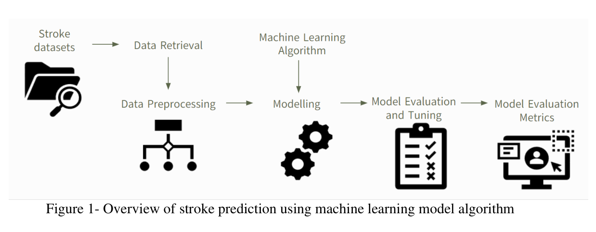
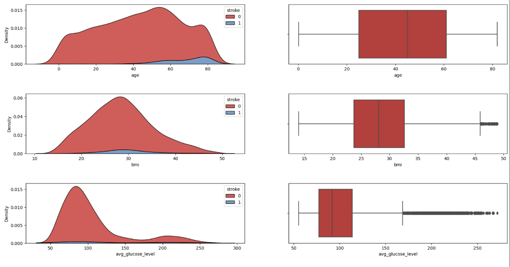
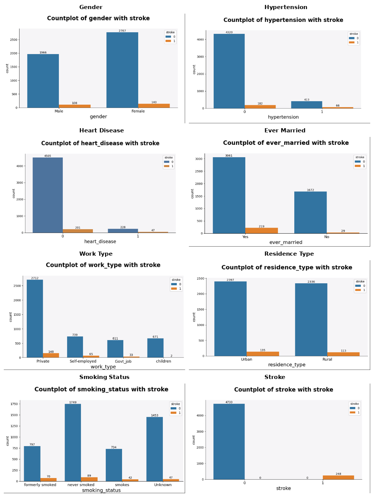
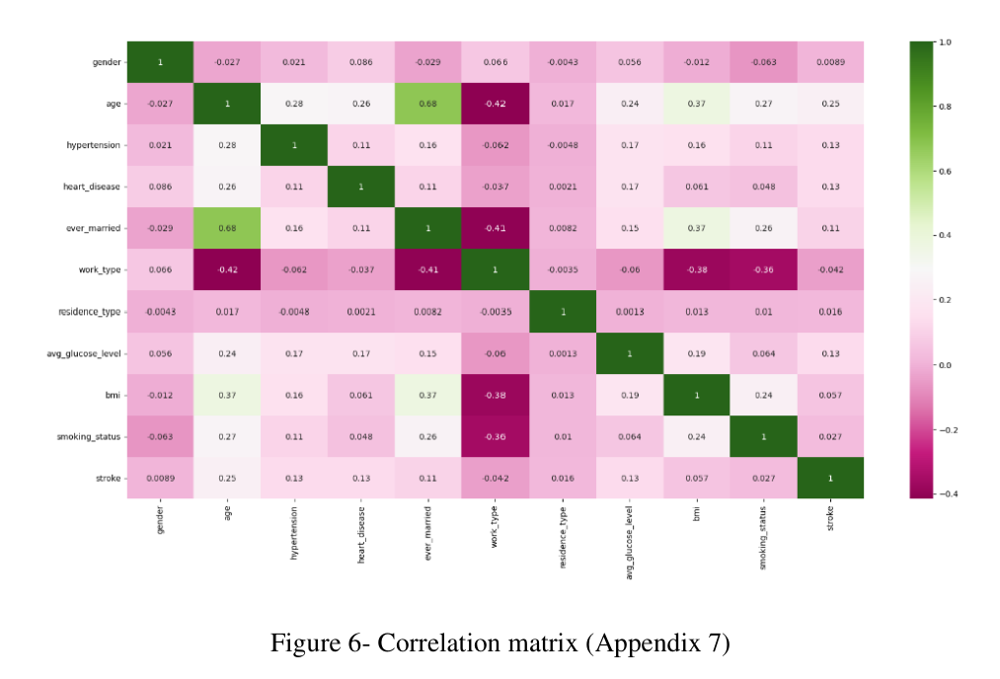
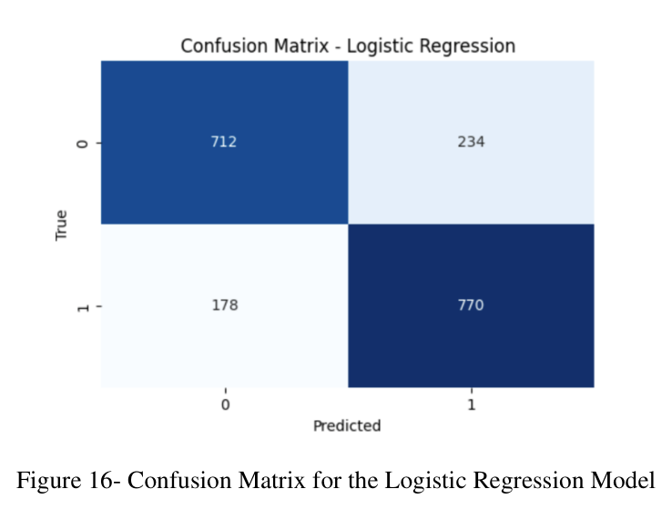
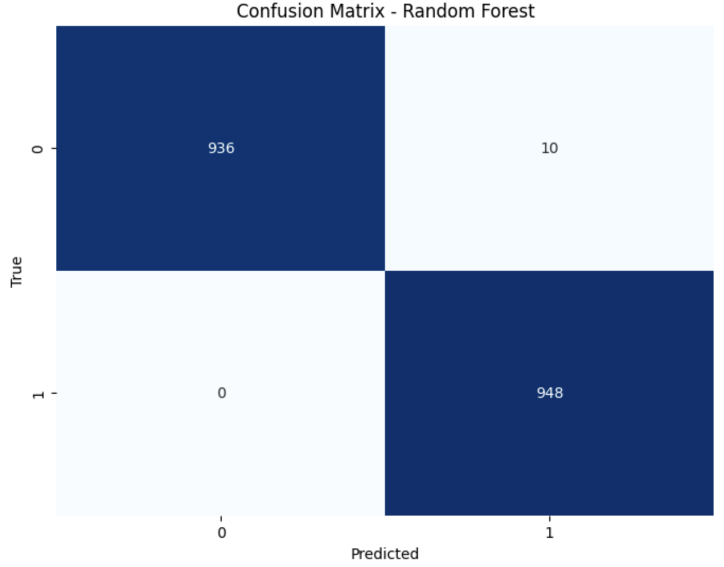
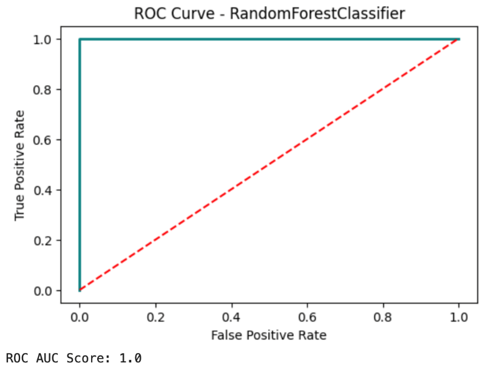
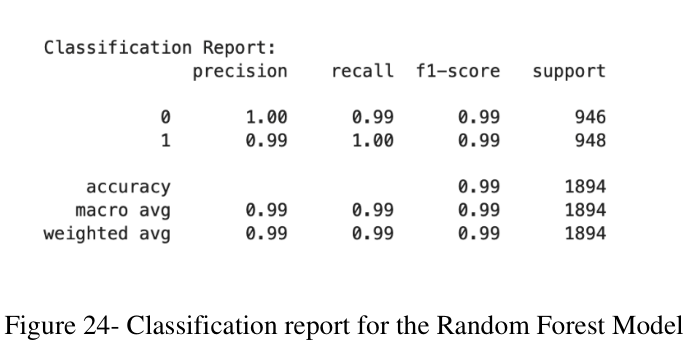

Stroke is a leading cause of death and long-term disability globally, making early detection a critical medical priority. Because brain cells begin to die the moment a stroke starts, having a reliable way to predict risk can lead to life-saving interventions. I wanted to see if machine learning could help clinicians identify high-risk patients by analysing common health indicators.
As part of a four-person university research project, I used a public dataset containing nearly 5,000 patient records, including health factors like age, BMI, and glucose levels. I compared five different algorithms, ranging from Logistic Regression to more complex ensemble models like Random Forest and XGBoost, to find the most effective predictor. A major technical challenge was that only 5% of the patients had actually suffered a stroke; to address this, I used an oversampling technique to balance the data so the model could learn the warning signs of a stroke more effectively.








I realised that in medical AI, technical accuracy must be balanced with clinical safety. It's far better to have a few false alarms than to miss a life-threatening event entirely. Navigating the constraints of a small, imbalanced dataset taught me how to prioritise the metrics that matter most to doctors and patients, not just the ones that look best on paper.